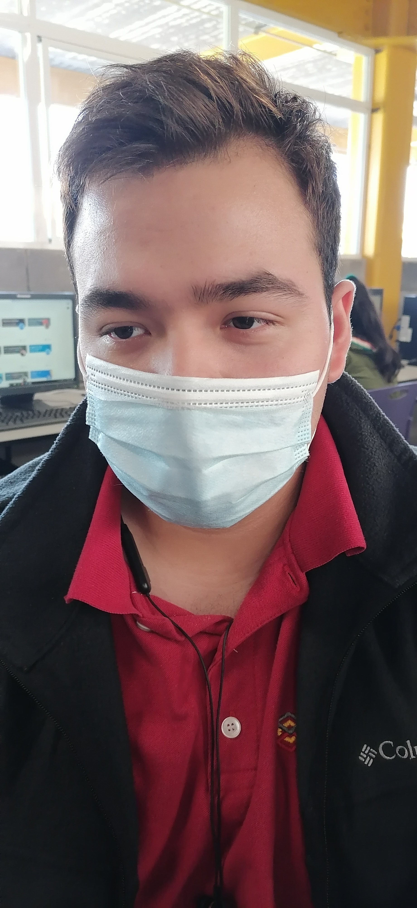

Datos de Contacto:
Enviar mail de contacto:
Idiomas:
Español Nativo
English Básico
Curriculum Vitae
Kevin Rivera Magallanes - 18 años
Paginas WEB
Resumen Acerca de Ti:
Estudiante de 18 años a terminar la prepa para conseguir trabajo.
Objetivos Personales:
Buscar un buen empleo.
Aprender hablar inglés.
Esforzarme por una buena condición física.
Tener buenos resultados en las materias.
Ahorrar para futuras cosas.
Habilidades aprendidas en las materias de especialidad:
Conocer variables, funciones, etc; en HTML y JS.
Diseñar paginas web.
Programar paginas web.
Abarcar más el lenguaje de programación JavaScript.
Empezar a diseñar con el lenguaje de programación CSS.Pensamiento crítico.
Adaptarme al cambio.
Trabajo en equipo.
Comunicarme asertivamente.
Liderazgo que inspire.
Lenguajes de programación que conoces:
html.
JavaScript.
css.
phyton.
Como te ves en 1, 3, 6 años:
En 1 año estaré en una universidad y saber que es lo que me gustará y trabajar en esó en un futuro, estudiar una ingenieria que me favorezca, hacer deporte y conseguir amistades buenas.
En 3 años me veo estudaindo una carrera de sitios web y tal vez ya empezar a ganar mi propio dinero, estar saludable y tomar decisiones responsables.
En 6 años me veo ya casandome y teniendo un trabajo estable, seguir estando saludable y ser una buena persona.
A que te gustaria dedicarte:
Aun no lo sé, ya que hay carreras literlamente muy imporantantes y me llamaron la atención asi que esto lo decidire en el futuro .